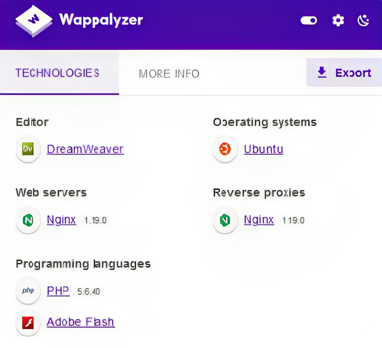
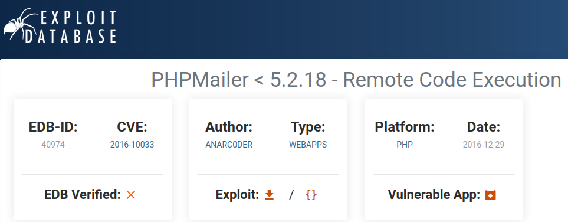
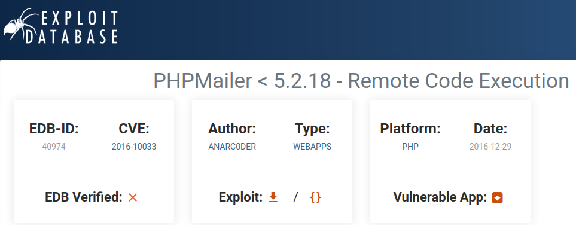

Vulnerable and Outdated Components
- Regular Updates and Patching Keep all software, libraries, and components up to date by applying security patches and updates. Developers frequently release patches to address vulnerabilities.
- Dependency Management Implement a robust dependency management process. Use tools like package managers to control and monitor dependencies, ensuring that you're using the latest and secure versions.
- Vulnerability Databases Subscribe to vulnerability databases like the National Vulnerability Database (NVD) to stay informed about known vulnerabilities in your components.
- Replace Outdated Components If a component is no longer supported or has critical vulnerabilities, consider replacing it with a more secure alternative.
- Code Review and Auditing Regularly review your code and audit your software for outdated or vulnerable components. Ensure that all components meet security standards.
- Least Privilege Access Restrict access to sensitive components and libraries. Only grant permissions to those who need them, and limit access based on the principle of least privilege.
- Third-Party Risk Assessment Assess the security posture of third-party components and libraries you use in your software. Ensure they follow secure development practices and put regular updates.
- Vulnerable components refer to software or libraries within a system that have known security flaws or weaknesses, which can potentially be exploited by attackers to compromise the system's security. Vulnerabilities can exist in any type of software, from web applications to operating systems and third-party libraries..
Outdated components are software components that are no longer maintained or updated with security patches by their developers. When components become outdated, they can pose a security risk because any new vulnerabilities discovered are not patched, leaving the system exposed to potential attacks.
1. Check Version of technology
- The versions of technologies used in a website can refer to various components of the web stack, including the web server, programming languages, databases, and frameworks. The specific versions of these technologies can have significant implications for the website's security, performance, and compatibility.
Using outdated versions of technologies in a website can be dangerous because it exposes the site to known security vulnerabilities, leading to potential data breaches, performance issues, and compatibility problems. This can result in compromised security, a poor user experience, and increased maintenance challenges. Staying up-to-date with technology versions is crucial for maintaining a secure and functional website.
The updates comes for the technology or software because there are some flaws or vulnerabilities in the older/previous versions and if then also companies are using older version then they can be vulnerable to attacks.
1. Find Versions:
- Manual Approach It can be found in the source code of the application, error messages, comments in html code, http headers, or maybe in default pages like phpinfo(), server-info, etc. Sometimes the CMS or its plugins versions and libraries version like of javascript can be also leaked.
HTTP/1.1 200 OK Date: Tue, 05 Oct 2023 12:00:00 GMT Server: Apache/2.2.32 (Ubuntu) Content-Type: text/html; charset=utf-8 Content-Length: 12345 Connection: keep-alive
- The "Server" header discloses the use of Apache version 2.2.32 running on Ubuntu and that apache version is vulnerable to DOS attack.
<!DOCTYPE html>
<html>
<head>
<title>My Outdated Website
<!-- Using WordPress v4.7.0 - Consider upgrading to the latest version for security. -->
<script src="jquery-1.10.2.min.js">
</head>
<body>
<!-- Please update this outdated WordPress version to the latest release. -->
<div id="content">
<!-- Other website content -->
</div>
</body>
</html>
- Like here you can see that wordpress 4.7.0 version that is vulnerable to xss is leaked in comments and jquery 1.10.2 version in disclosed in source code itself.


- Like here you can see apache 2.0.54 version is leaked in the default error page and PHP info is leaked in its default phpinfo() page.
- Automatic Approach It can be found through tools like wappalyzer, builtwith, dnsdumpster, whatweb, nmap, burpsuite, wpscan, nuclei, nikto, or any other vulnerability scanners. These tools are used to save time and efforts, but we must use manual approach to cross check, as automatic approach is sometime not helpful.



- Like here you can see that versions of technologies, software or libraries, etc are shown in wappalyzer extention and in builtwith and dnsdumpster website. and it can be used to chain with other vulnerabilities.
whatweb -v -a 3 https://target.com whatweb -a 3 https://target.com whatweb -v https://target.com
- Master the Art of WhatWeb with These Essential Command!
nmap -sV target.com nmap -A target.com nmap -sV -p 1-65535 target.com nmap -sV --script=vulners target.com nmap -sV --version-intensity 9 target.com nmap -sV --script=banner target.com Helpful Page - https://nmap.org/nsedoc/categories/version.html
- Unlock the Power of Nmap with These Essential Command Secrets!
wpscan --url https://target.com --random-user-agent -e vt,vp,u,dbe
- Explore WPScan's Secrets with These Essential Command!
nuclei -u target.com -t /path/fingerprinthub-web-fingerprints.yaml nuclei -u target.com -t /path/http-server-header.yaml nuclei -u target.com
- Unearth Hidden Web Vulnerabilities with These Nuclei Commands!
nikto -h https://target.com -T 3 nikto -h https://target.com nikto -h https://target.com -C all
- Unveil Web Security Secrets: Essential Nikto Commands Inside!
- Important These all commands that are provided is just basic and tip of an iceberg, you need to dive deeper to learn about these tools cause commands creation can be also depend on target.
2. Exploit Versions:
- After finding the versions from any source, for example you have discovered the PHPMailer 5.2.18 from the comment in http or other source. Now, you can go to searchsploit, exploit-db, metasploit, for search exploits or just simply google it like "PHPMailer 5.2.18 exploits".
- Searchsploit Output

- Exploit-db Output
 

- Metasploit Output

- Important You can see the output from all sources and they can be different also. You need to learn about metasploit, exploit-db and searchsploit before exploiting this.
2. Mitigation Practices
- Addressing Vulnerable and Outdated Components: Effective Mitigation Techniques
3. Reference Reports
- Cross-Site Scripting (XSS) vulnerability in a production application using an outdated version of the jQuery library (verison 3.3.1 or earlier).
- Information Disclosure vulnerability in a production application using an outdated version of the PHP Laravel library (version 5.7 or earlier).
- Outdated version of Yahoo's Bug Bounty program API (version unknown).
- Cross-Site Request Forgery (CSRF) vulnerability in a production application using an outdated version of the Spring Boot library (version 2.0.4 or earlier).
- Remote Code Execution (RCE) vulnerability in the Apache Struts2 library (version 2.5.25 or earlier).
- Arbitary file upload vulnerability in a production application using an outdated version of the Apache Commons FileUpload library (version 1.4 or earlier).
4. Solve Labs/Machines
- Metasploitable 2 is a virtual environment that contains intentionally vulnerable and outdated versions, making it an ideal platform for practicing and improving skills in identifying and mitigating security weaknesses.